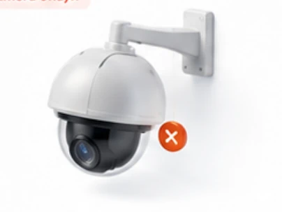
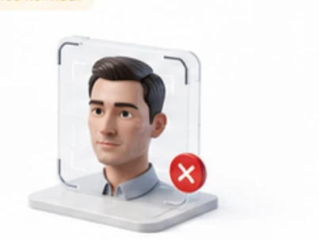
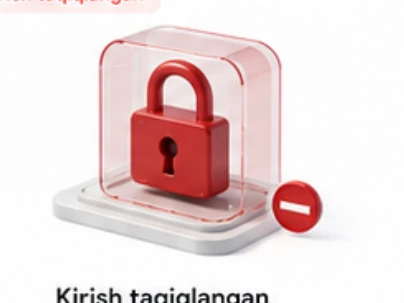
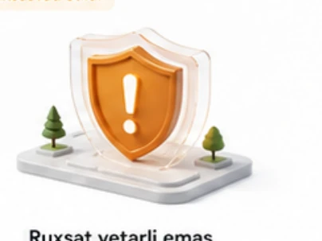
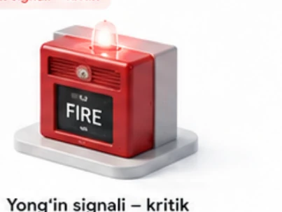
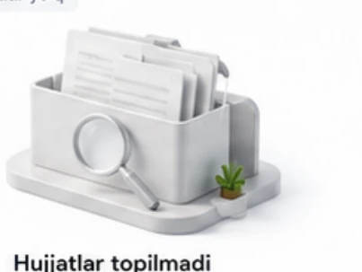
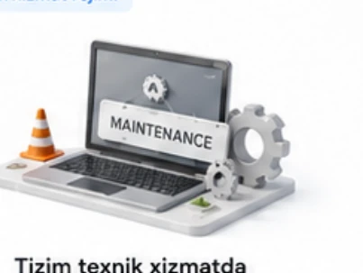

Tizim turli holatlarda foydalanuvchiga ko'rsatadigan xabar va ogohlantirish ekranlari — qurilma va tarmoq nosozliklaridan tortib, kirish huquqi va hujjat holatigacha.

Sahifa topilmadi
Kechirasiz, siz izlayotgan sahifa mavjud emas yoki ko'chirib tashlangan.
To'liq ekranni ko'rish Bosh sahifaga qaytish
Fotojamlanma hali yuklanmagan
Ko'rik o'tkazildi, ammo fotosuratlar hali sinxronlanmagan. Inspektor qurilmasi tarmoqqa ulanganda materiallar avtomatik yuklanadi.
Internet aloqasi yo'q
Internetga ulanish aniqlanmadi. Tarmoqni tekshiring va qayta urinib ko'ring.
Ma'lumotlar sinxronlanmoqda
Tizim ma'lumotlarni sinxronlashtirmoqda. Iltimos, kuting.

Yuz mos kelmadi
Yuz identifikatsiyasi muvaffaqiyatsiz bo'ldi. Iltimos, qo'lda tasdiqlang.

Kirish taqiqlangan
Sizda ushbu tizimga kirish huquqi yo'q. Administrator bilan bog'laning.
Bosh sahifaga qaytish
Ruxsat yetarli emas
Ushbu amalni bajarish uchun sizda kerakli ruxsatlar mavjud emas.
Bosh sahifaga qaytish
Yong'in signali – kritik
Yong'in signalizatsiyasi faollashdi! Zudlik bilan xavfsizlik choralarini ko'ring.

Hujjatlar topilmadi
Hozircha hujjatlar mavjud emas. Yangi hujjat yuklab yoki yarating.
Hujjat yuklash Yangi hujjat yaratish
Tizim texnik xizmatda
Tizim vaqtincha texnik xizmat ko'rsatish rejimida. Iltimos, keyinroq qayta kiring.